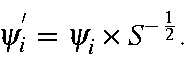
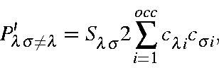
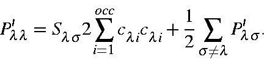

Mulliken populations
By default, the density matrix printed is the Coulson matrix, which
assumes that the atomic orbitals are orthogonalized.
If the assumption of orthogonality is not made, then the Mulliken density
matrix can be constructed. To construct the Mulliken density matrix (also known
as the Mulliken population analysis), the M.O.s must first be re-normalized,
using the overlap matrix, S:

From these M.O.s, a Coulson population is carried out. The off diagonal terms
are simply the Coulson terms multiplied by the overlap:

while the on-diagonal terms are given by the Coulson terms, plus half the sum
of the off-diagonal elements:

A check of the correctness of the Mulliken populations is to add the diagonal
terms: these should equal the number of electrons in the system. As
with the Coulson population, the unit of the Mulliken population analysis is the
electron. For the hydrogen atom, the Pss population
would be 1.00.